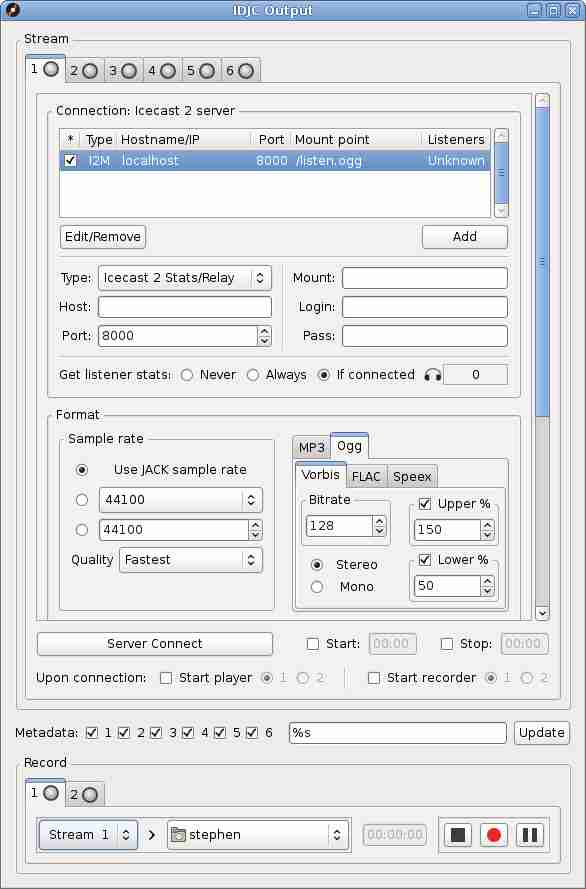

Here is the output window where the controls for connecting to servers or recording to the hard drive can be found. The bulk of the window is taken up by the server and encoder controls as you might expect.
The Connection frame is concerned with the details necessary for establishing a connection with an Icecast or Shoutcast server. To make an entry, fill in the necessary details in the boxes and click the Add button. The connection Type refers to the type of server you are attempting to connect with. The Stats/Relay types are for gathering listener stats only so if you wish to stream you will need to add one and only one master server. The Hostname and Port number should be familiar to you, but for Icecast servers there is also the Mount point and Login username. If you don't know the Login name, try source (it is considered the default login name for an Icecast server source). Finally Pass is an abbreviation of password. If you wish to turn off stats retrieval for a particular server you can do so by unchecking the box in the asterisk column after having added your server to the list.
The Format frame is for setting the samplerate, bitrate, and format of the stream of which you can choose between Ogg and mp3 and a wide selection of bitrates and samplerates, however not all of them are going to be valid, for instance all the valid mp3 samplerates are those listed in the drop down box. Additionally there is a status bar to indicate the state of the stream encoder and an Update button for changing the encoder parameters while the stream is running.
The Stream Info pane (not shown but accessible using the scroll bar) is for entering textual information about your stream and station. Be descriptive here if the information is going to be displayed on a listings site.
Make Public causes your radio station to be catalogued on whichever listings site the server is configured for, if any. A good example of a listing site is www.shoutcast.com). Note that it may take a while for your station to appear in the listings.
The Shoutcast Contact Info pane (also not shown) allows for the setting of contact information for the IRC, AIM, and ICQ networks. This feature as the name suggests only works with shoutcast servers and may also be disabled, if that is the case this particular pane will not be shown.
Server Connect triggers a connection attempt with the server. Notice the state of the status LED in the stream tab. When it goes solid green you are connected. To disconnect, click the Server Connect button once more. Alongside are controls to allow automatic server connection and disconnection based on a 24 hour clock, which can also be set to coincide with the starting of a media player and a recorder.
The Metadata line is for entering custom text to be sent along with the stream. Typically just the song title is sent which can be achieved by entering "%s" in the box and pressing the Update button. The checkboxes are for specifying which streams are to be affected by the change.
Regarding the recorder, left to right we have the Stream Selector, the Save Directory Chooser, the recording time elapsed counter, the Stop Button, the Record Button, and finally the Pause Button. It is not necessary to be streaming in order to make a recording but you will need to ensure the format settings are correct prior to pressing the Record button.
Other Windows In IDJC
Main Window Jingles Prefs